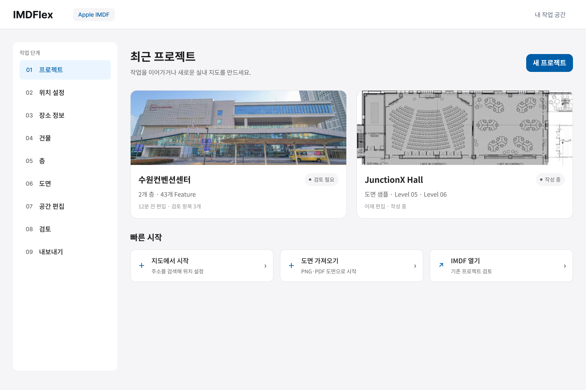
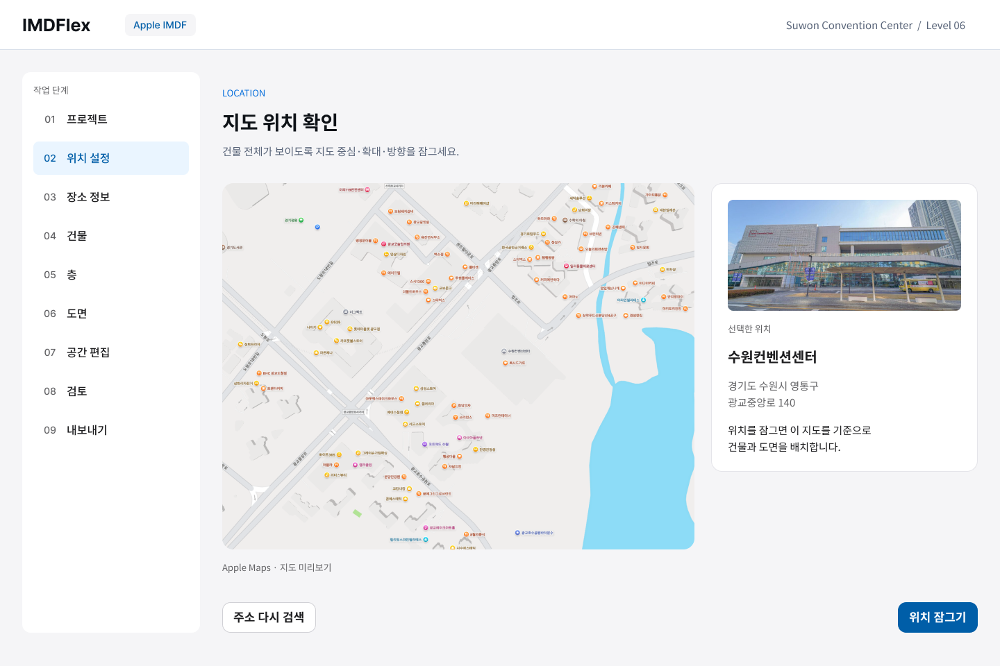
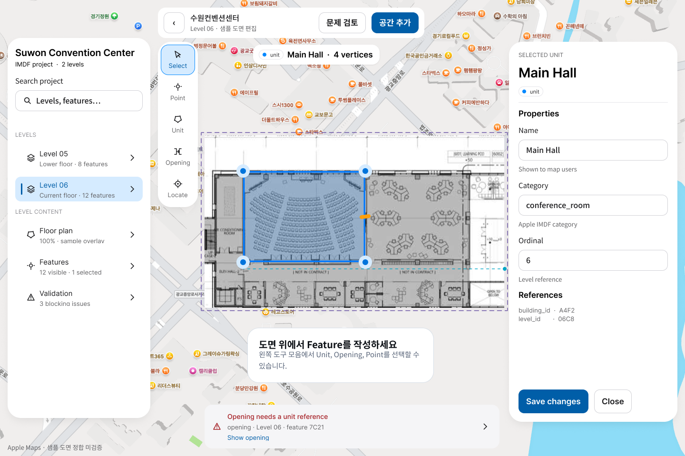
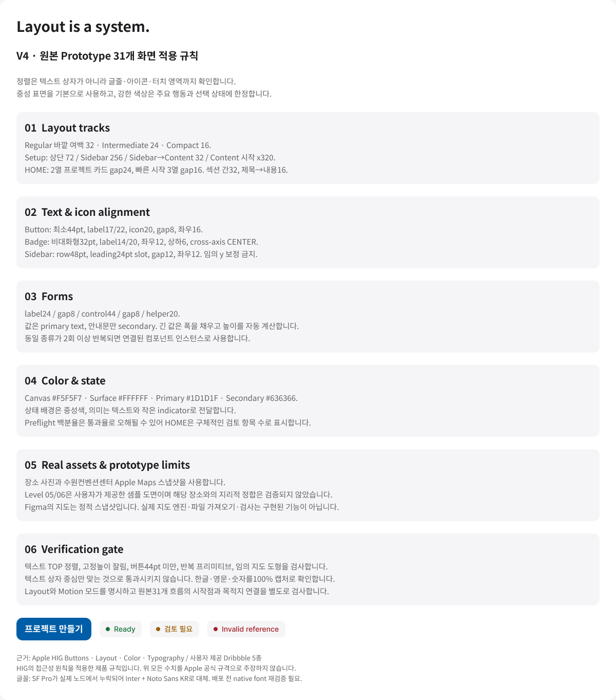

정렬, 반복 구조, 실제 콘텐츠를
기준으로 다시 정리했습니다.
V3 사본만 검사하던 문제를 바로잡고, 사용자가 지적한 원본 Prototype / 01 HOME-01과 Prototype / 05 SETUP-03에 직접 반영했습니다. Xcode와 제품 코드는 변경하지 않았습니다.
확인된 결과
원본 HOME 시작점을 추가했습니다. Figma Present에서 IMDFlex · Original 31 · V4 refinement 흐름을 선택하면 됩니다.
01 · HOME
추상적인 파랑·보라 썸네일을 장소 사진과 사용자가 제공한 도면으로 교체했습니다. 프로젝트 카드는 동일한 2열 구조, 빠른 시작은 동일한 3열 행으로 구성했습니다.
모호한 “Preflight 92%” 대신 검토 항목 수를 보여줍니다. 상태는 버튼으로 취급하지 않으며, 라벨·글줄·아이콘을 Auto Layout 안에서 정렬했습니다.

02 · 실제 지도와 위치 확인
격자와 임의 사각형으로 만든 지도를 실제 수원컨벤션센터 Apple Maps 스냅샷으로 교체했습니다. 장소 사진·주소·확인 설명을 별도 패널에 배치하고, 하단 행동을 공통 기준선에 맞췄습니다.
주소 검색의 세 아이콘이 같은 위치에 겹쳐 있던 문제도 검색 결과 행 인스턴스로 교체해 해결했습니다. 주소·Venue·건물 화면에도 실제 지도 이미지를 적용했습니다.

03 · 편집기 회귀 수정
지도 도구 위에 겹쳐 있던 검은 프로토타입 상태 바를 제거하고, 뒤로·프로젝트 범위·검토·다음 행동을 연결된 EditorHeader로 구성했습니다. 9개 편집·리뷰 화면에 적용했습니다.
도면은 불투명도만 높여도 곱하기 혼합 때문에 지도 글자가 비쳐 보였습니다. 노드와 이미지의 혼합 방식을 NORMAL로 바꾸고 표시 문구도 100%로 맞췄습니다.

디자인 시스템에 추가·반영한 원칙
| 항목 | 제품 규칙 | 반영 내용 |
|---|---|---|
| 레이아웃 | 외곽 32 / 24 / 16, 섹션 간 32, 제목–내용 16 | Layout gutter 변수 업데이트, 원본 Setup 공통 시작선·하단 버튼 정렬 |
| 버튼 | 최소 44pt 높이, 17/22 라벨, 좌우 16, 아이콘 간격 8 | Primary·Secondary·Destructive 소스 수정, 긴 라벨 기준 너비 |
| 상태 | 32pt, 14/20 라벨, 작은 indicator, 중성 배경 | 원본의 평면 Pill 사각형 0개, Foundations의 잘못된 상태 예시 교체 |
| 입력 | label24 → gap8 → control44 → gap8 → helper20 | 원본 평면 필드 18개를 공통 Field 인스턴스로 교체 |
| 반복 구조 | 컴포넌트 인스턴스 재사용 | WorkflowSidebar 14, WorkflowRow 126, EditorHeader 9, ProjectCard 2, QuickStartRow 3, SearchResultRow 3 |
| 색상 | #F5F5F7 / #FFFFFF / #1D1D1F / #636366 | 차가운 회색을 중성 회색으로 정리, 넓은 상태색 면적 축소 |
반복 구조 수는 원본 31개 화면 안에서 집계한 값입니다. 위 수치는 IMDFlex의 설계 규칙이며 모든 수치를 Apple 공식 규격으로 주장하지 않습니다.

교차 검수와 남은 제약
| 검수 | 결과 |
|---|---|
| HOME · 지도 확인 · 편집기 100% 캡처 | 이번 결함 범위 통과 |
| 원본 31개 연결 그래프 | 31개 도달 / 76개 연결 / 깨진 목적지 0 |
| 원본 텍스트 스타일·누락 글꼴 | 스타일 미지정 0 / 누락 글꼴 0 |
| 전체 31개 개별 화면의 시각 검수 | 완료 판정하지 않음 |
| 모든 반복 요소의 컴포넌트화 | 위에 명시한 공통 요소는 적용. 모든 잔여 반복 패턴에 대한 완전성은 미인증 |
| Apple 네이티브 라이브러리 | 기존 참조 인스턴스에서 SF Pro·기호 글꼴 누락 확인. 현재 결과는 Inter·Noto Sans KR로 검증; 네이티브 글꼴 복원 후 재검증 필요 |
- 지도는 실제 장소의 정적 스냅샷입니다. Figma 안에서 실제 지도 엔진의 검색·확대·회전이 실행되는 것은 아닙니다.
- Level 05/06 도면은 사용자 제공 샘플입니다. 수원컨벤션센터 도면이라고 확인된 자료가 아니며, 장소와 도면의 지리적 정합도 검증되지 않았습니다.
- 파일 가져오기·검사·내보내기는 프로토타입 상태 흐름입니다. 실제 파일 처리나 Apple 제출 적합성을 검증한 결과가 아닙니다.
- 원본은 Regular·Standard·Light 모드를 명시했습니다. 모드 지정만으로 모든 크기의 반응형·Reduced Motion 동작이 검증되는 것은 아닙니다.
레퍼런스에서 가져온 기준
POS·Calendar: 반복 카드의 동일한 내부 구조와 제한된 강조색.
Dark or light: 정보 영역의 명확한 분리와 공통 정렬선.
Reservation Grid: 일정한 행 높이와 작업 영역의 질서.
Smart Home: 시스템형 사이드바·검색·선택 행.
Road Mapping: 중성 UI와 작업 캔버스 중심의 구성. 지리 지도 레퍼런스는 아닙니다.
공식 원칙: HIG Buttons · Layout · Color · Typography